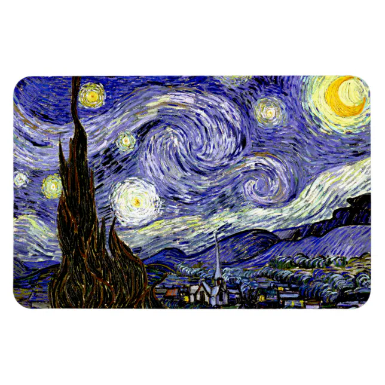

Pinceladas marcantes
Observe as pinceladas curvas que dão movimento ao céu e tornam a pintura única.
UMA OBRA DE VINCENT VAN GOGH
Pintada em 1889, A Noite Estrelada é uma das obras mais famosas de Vincent van Gogh. A pintura apresenta um céu noturno cheio de movimento, estrelas brilhantes e formas marcantes que expressam a visão única do artista.
Conhecer a obra ✦
A Noite Estrelada foi pintada por Vincent van Gogh em junho de 1889, enquanto o artista estava internado no Saint-Paul-de-Mausole, em Saint-Rémy-de-Provence, na França.
Vincent van Gogh foi um pintor pós-impressionista holandês. Suas obras são conhecidas pelas cores intensas, pinceladas marcantes e pela maneira emocional de representar o mundo.
O céu é o elemento de maior destaque da pintura. Suas espirais, estrelas e cores intensas criam uma sensação de movimento e tornam a paisagem inesquecível.
VISITE E DESCUBRA
Conheça o museu onde está exposta a obra A Noite Estrelada.
Endereço: 11 West 53rd Street
Cidade: Nova York, NY 10019
País: Estados Unidos
A Noite Estrelada, de Vincent van Gogh, faz parte do acervo do MoMA.
Conhecer o museu ↗EXPLORE A ARTE
Três destaques para conhecer melhor esta obra tão famosa.
Observe as pinceladas curvas que dão movimento ao céu e tornam a pintura única.
As estrelas e a Lua aparecem em tons intensos de amarelo, criando contraste com o azul.
Na parte inferior, a vila tranquila contrasta com o céu cheio de energia e movimento.
TIRE SUAS DÚVIDAS
Saiba mais sobre A Noite Estrelada e a história por trás da obra.
A obra foi pintada pelo artista holandês Vincent van Gogh, um dos nomes mais conhecidos do pós-impressionismo.
Van Gogh pintou A Noite Estrelada em junho de 1889, durante sua estadia em Saint-Rémy-de-Provence, na França.
A pintura faz parte do acervo do Museum of Modern Art (MoMA), localizado na 11 West 53rd Street, em Nova York, Estados Unidos.
O céu apresenta formas curvas, estrelas luminosas e contrastes de azul e amarelo. As pinceladas criam uma forte sensação de movimento.
Referência técnica: MDN Web Docs — elemento summary.
SUA PRÓXIMA DESCOBERTA
Explore a história, as cores e os detalhes de A Noite Estrelada e descubra o que faz essa obra continuar encantando pessoas no mundo todo.
Explorar a obra ✦